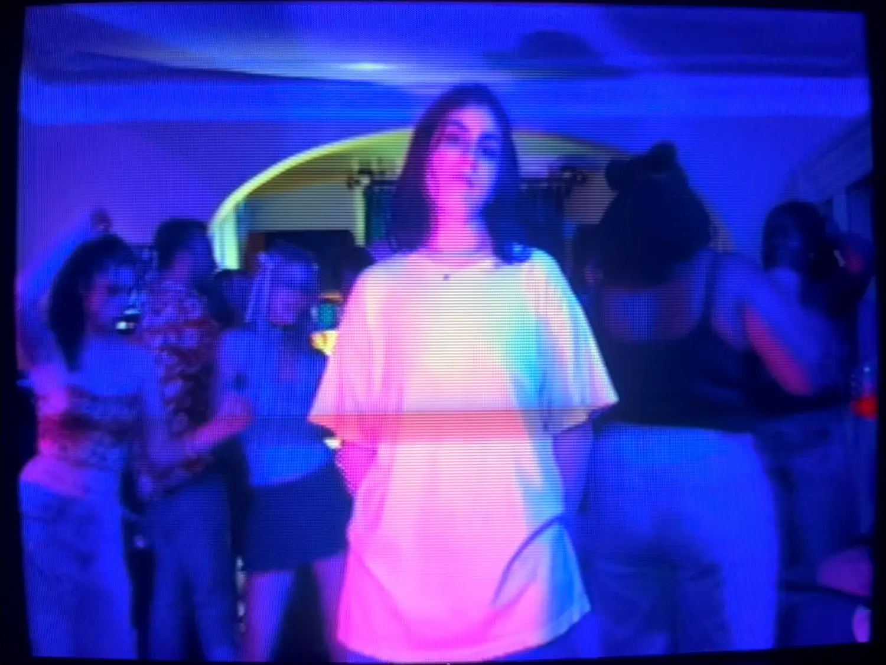
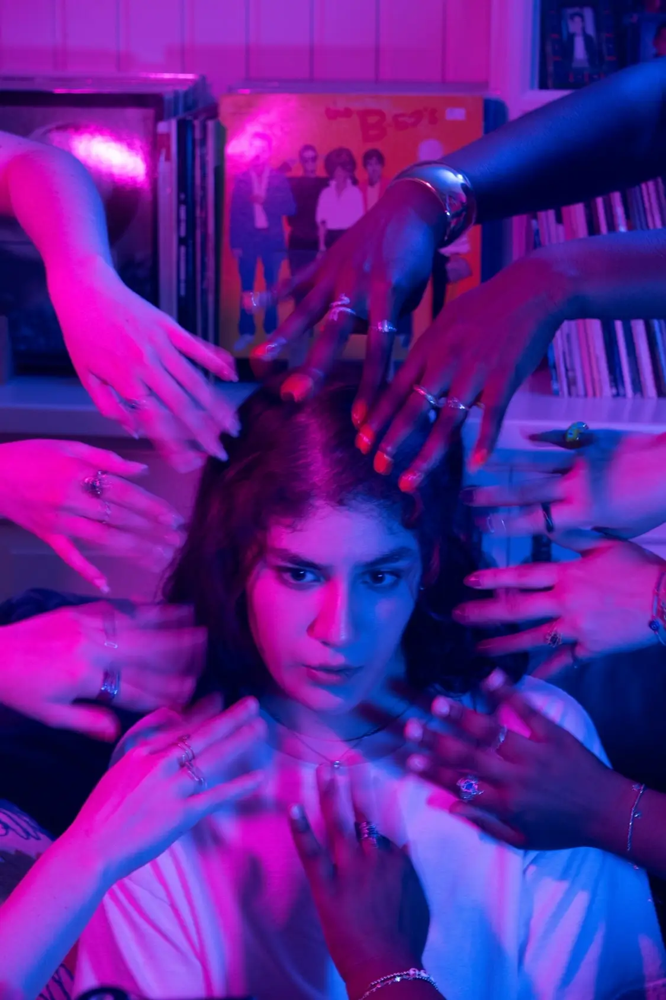
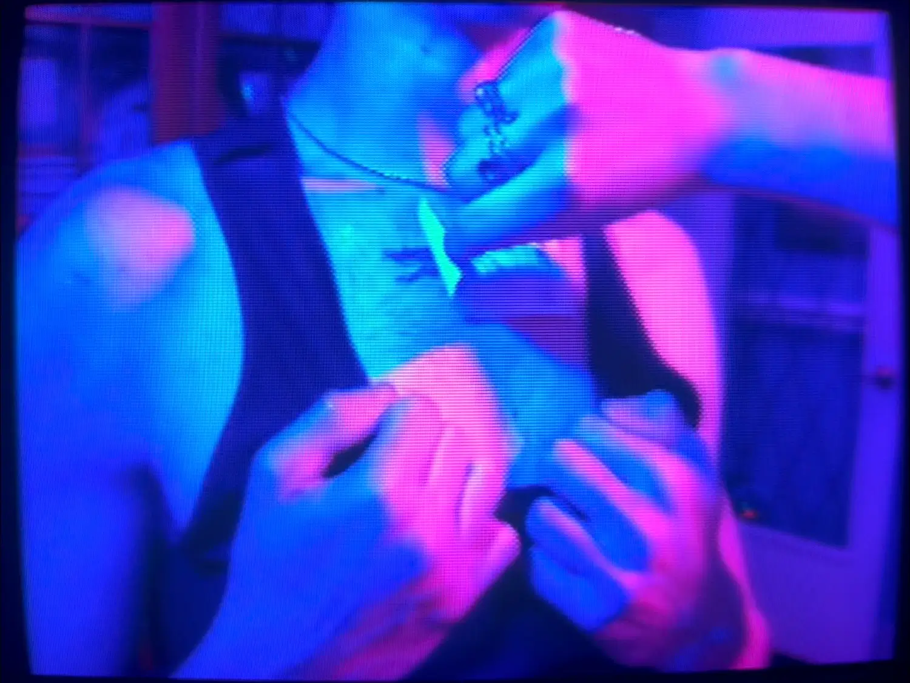

← Back to Home | ← Back to Videos
MOOD RING
- Music Video for sofie lopez, 2025.
- "Mood Ring" is the lead single for sofie lopez's debut EP, "Late Bloomer".
- Featuring Sofia Lopez, Cameron Clifford, Ogenna Oraedu, Marcus Wright, and Trinity Lundemo.
- Also Featuring Hannah Goldschmidt, Maya Mitchell, Corey Batchelder, Brian Katat, Kiera Kennedy, Alec Pagano, Kyle Castillo, Nick Re, and Mathilda Rice.
- Production Assistants - Brian Collins, Mathilda Rice, Konner Ezra, Trinity Lundemo, and Sophia Patz.
- Additional Photography by Sophia Patz.
- Special thanks to Olivia Boucher on behalf of 938collective and Mr. and Mrs. Lopez.
- Additional thanks to Kavya Ramesh, Diego Ramirez, Leia Magette, and Vincent Olivieri.
- Runtime – 4:27.
- Shot on iPhone.
- Edited with Final Cut Pro for Mac.
- Shot on location in South Orange, NJ.

Credits
Details

